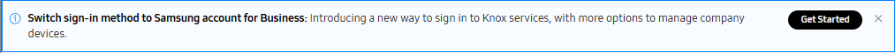
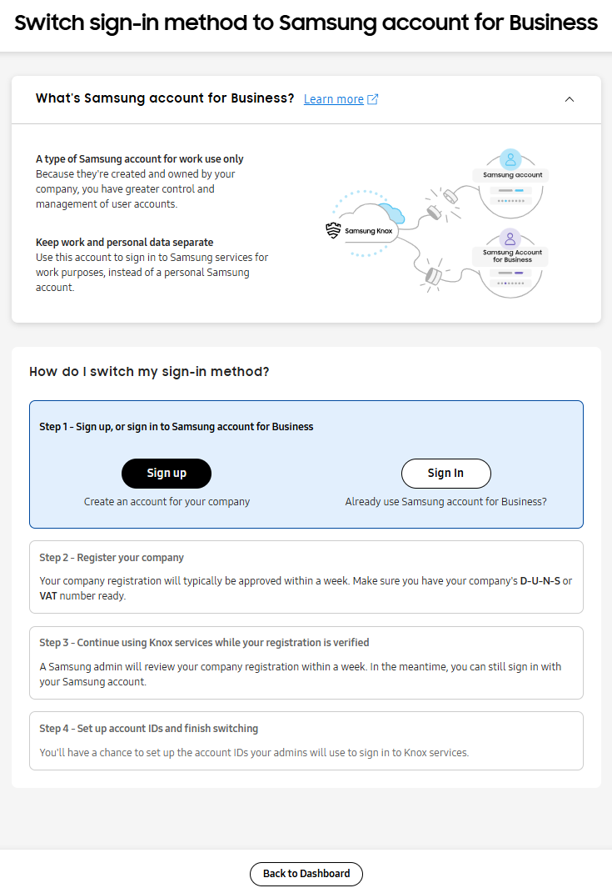
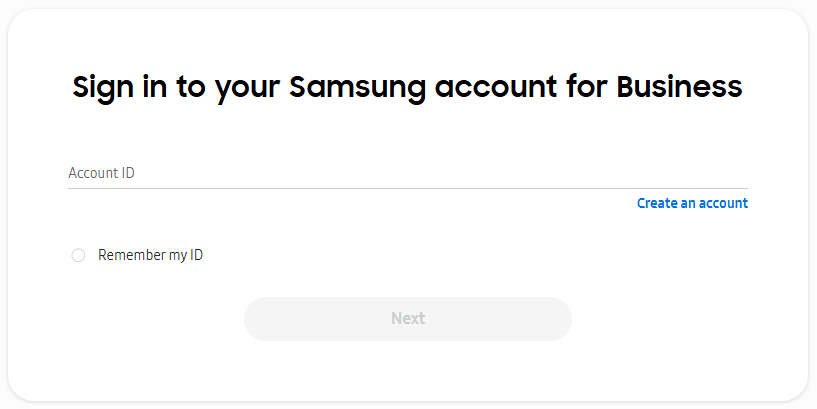
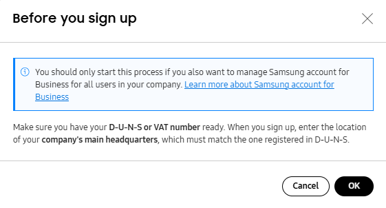
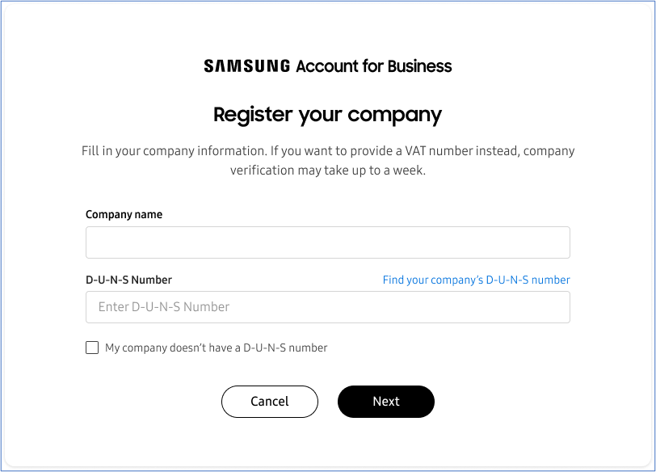
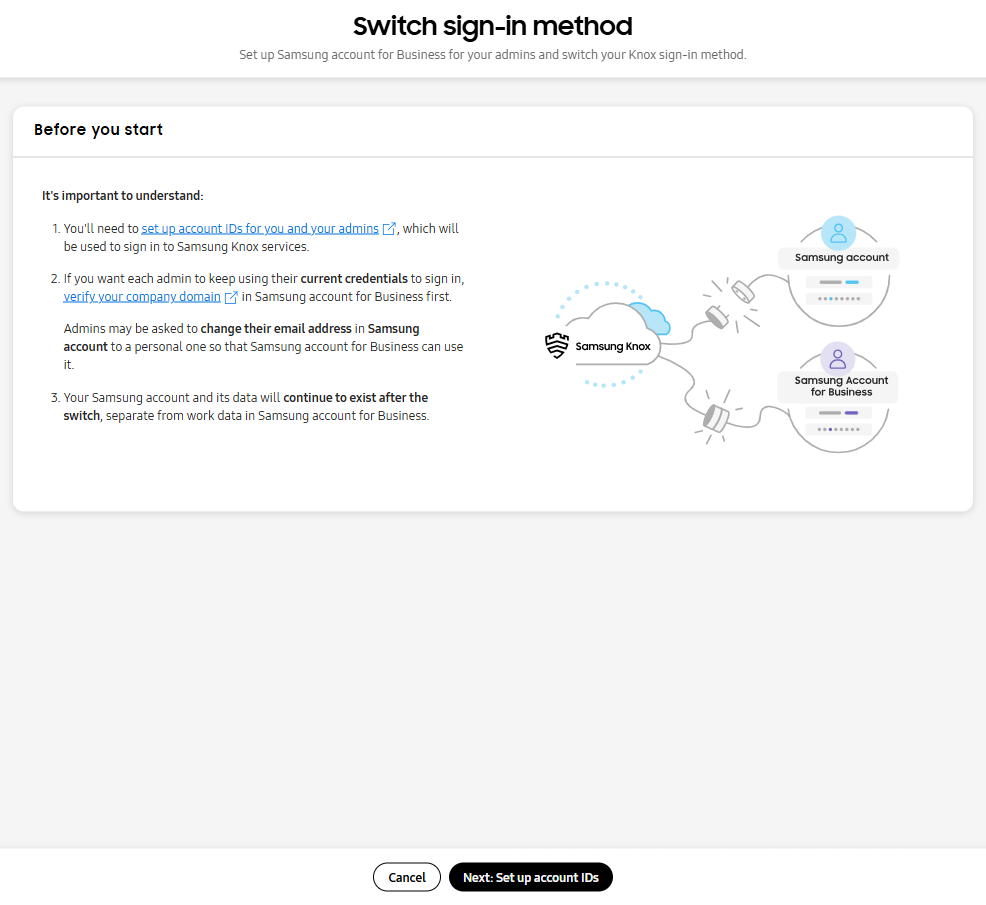
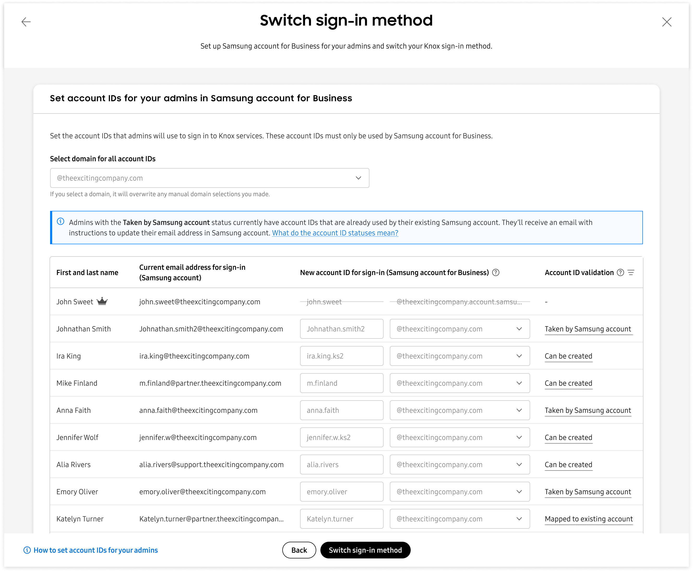

Switch to Samsung account for Business
Last updated January 28th, 2026
- You must be a super admin of a Knox company account to transition from a personal Samsung account to Samsung account for Business.
- Once you switch the sign-in method to Samsung account for Business, you can’t revert to the previous sign-in method. All users of a Knox company account (including sub-admins) must sign in using their Samsung account for Business account IDs.
Starting with the 25.11 release, new Samsung Knox accounts are created using Samsung account for Business. If you are a super admin for an existing Knox account created before the 25.11 release that’s linked to a personal Samsung account, you have the option of switching to Samsung account for Business.
Samsung account for Business is an identity and access management platform designed to be at the core of IT operations, acting as a secure gateway to Samsung’s ecosystem of enterprise solutions. With this work-exclusive account for your company, you can manage user accounts with ease and keep work and personal data separate. After switching to Samsung account for Business, your Knox data, including all devices and licenses, is available under the new account as is.
This tutorial guides super admins through the process of switching your Knox sign-in method to Samsung account for Business.
Pre-requisites
Before you begin the process to switch the sign-in method to Samsung account for Business:
- Ensure you’re a super admin of the Knox company account.
- Ensure you have your company’s D-U-N-S, VAT number, or Business Registration number ready, if you need to create a Samsung account for Business for your company.
Step 1: Sign up or sign in to Samsung account for Business
When you sign in to the Knox Admin Portal with your personal Samsung account, a banner is shown at the top of the page prompting you to switch the sign-in method. If you dismiss the banner, it will reappear after 30 days.
To start the switch process:
-
Click Get started on the banner to Switch your sign-in method to Samsung account for Business.

If you already started the process, the banner will reappear upon each sign-in and display one of the following messages depending on the status:
- Company registration incomplete: You have created a Samsung account for Business, but you have not completed the mandatory step of registering your company.
- Verifying company registration: Your company registration for Samsung account for Business is pending.
- Company registration rejected: You must submit another company registration request and receive approval before switching to Samsung account for Business.
- Company registration verified: Your company has been registered and your Knox sign-in method is ready to be switched to Samsung account for Business. The Switch sign-in method to Samsung account for Business page opens.

-
If you are already using Samsung account for Business for your company, click Sign in and use your account ID to sign in.

-
If you haven’t created a Samsung account for Business, use the following steps to create an account before you start the process to switch the sign-in method:
-
Click Sign up to create an account for your company. The Before you sign up dialog appears.

-
Review the notice and click OK to proceed.
-
Create a Samsung account for Business and proceed to register your company. The Register your company dialog displays.

-
Step 2: Register your company
To register your company:
-
Enter your company name and D-U-N-S number in the Register your company dialog.
Alternatively, select My company doesn’t have a D-U-N-S number and provide a valid VAT number or business registration number.
-
Click Next. The Review company details page displays.
-
If you provided your D-U-N-S number, your company information, such as company name, country or region, address, phone number, and website, is retrieved and shown in the Review company details dialog. Verify the company information.
-
If you provided VAT number or business registration number, provide your company information on the page.
If your company is already registered, the Registration request sent dialog displays. Your registration request is sent to existing admin of the company’s Samsung account for Business, who will review and create a new account ID for you. You will receive an email notifying you about the new account ID. You can activate your account ID and use it to sign in when starting the process to switch the sign-in method.
You can click Back to dashboard to continue using Knox services with your current sign-in method in the meantime.
-
-
Click Next. The Provide contact for verification dialog displays.
-
Provide details of a company representative who can verify your company, and click Submit. The Company registration submitted dialog displays confirming the registration. You can click Read about next steps to learn more about the process.
A Samsung representative will process and verify your company information. You’ll receive an email once your company is approved.
While your application is being processed, you can continue to use Knox services with your existing personal Samsung account.
Step 3: Continue using Knox services while your registration is verified
Once you’ve completed the previous step, Samsung admin will review your company registration. Meanwhile, you can continue using your existing personal Samsung account to access Knox cloud services.
After your company registration is approved, you can navigate to the Switch sign-in method to Samsung account for Business page using the banner displayed on the Knox Admin Portal upon signing in.

Additionally, after your company registration is approved, you can access the Samsung account for Business console to manage your company domains. You can:
- Verify your existing domain
- Add and verify any additional domains you want to use
For more information about managing domains, see Add domains in the Samsung account for Business documentation.
Step 4: Set up account IDs and finish switching
Next, as the super admin, you’ll be setting up account IDs for sub-admins that they’ll use to access the Knox Admin Portal.
Account IDs are created in the format: user ID + @ + company domain. Note that:
-
To create account IDs for the sub-admins, you’ll need to specify the domain to be used.
-
If you want to use a particular domain to create the account IDs, ensure that its added and verified in the Samsung account for Business console before you switch the sign-in method.
To start the switch to Samsung account for Business:
-
On the Switch sign-in method to Samsung account for Business page, click Start the switch. The Switch sign-in method page opens and displays information about the process.

-
Click Next: Set up account IDs to start the setup process. The Set account IDs for your admins in Samsung account for Business section displays a table with information about your existing sub-admins.

The following information is shown for each sub-admin:
-
First and last name
-
Current email address for sign-in (Samsung account): Shows the email address used for personal Samsung account.
-
New account ID for sign-in (Samsung account for Business): Shows the account ID, including domain information. You can update the account ID, if required.
-
Account ID validation shows the following validation statuses:
-
Can be created: Sub-admins can activate their new account ID received through the email notification.
-
Mapped to existing account: Sub-admins can sign in with their existing Samsung account for Business.
-
Taken by Samsung account: After the switch, the sub-admins must update email address in personal Samsung account. This is required because the email address of a personal Samsung account cannot be the same as the account ID of a Samsung account for Business.
-
Used by another Knox account: The Samsung account for Business with this account ID is already in use by another Knox admin. Since a Samsung account for Business account ID cannot be shared across multiple Knox accounts, the user must use a different user ID or company domain.
-
-
-
If your account has more than one verified domain, select a domain from the Select domain for all account IDs drop down to apply to all sub-admins listed in the table. The new domain overrides any previously selected domains. If you only have a default domain, it is applied automatically.
Domains are used to generate account IDs in the format:
user ID + ‘@' + company domain.Account IDs are not case-sensitive. When creating an account ID, ensure the following conditions are met:
- Account ID is 1 — 45 characters long
- Does not contain the prohibited words: samsung, supervisor, or tizen
- Does not include any special characters except the following:
.(period),_(underscore),-(hyphen),+(plus symbol) - Does not have spaces at the beginning or end
If required, you can change your account ID after the sign-in method is switched.
-
Review and edit the account IDs for all sub-admins listed in the table.
-
Ensure that account IDs are unique and not used in another Samsung account for Business.
-
The email address for a personal Samsung account can’t be the same as an account ID in Samsung account for Business. In case of a conflict, the sub-admin will receive an email and is guided to first change the email address in their existing personal Samsung account before activating their account ID.
Ensure that your sub-admins change their email address in the personal Samsung account only when guided during the switch process. If they make the change before the switch process is completed, they will not be able to sign in to the Knox Admin Portal.
-
-
Click Switch sign-in method. The Switch sign-in method dialog displays.

-
Click Yes, switch to confirm the switch and proceed with the process.
-
Lastly, in case of multiple domains, the Last step: Select your account ID dialog displays, where you can select the account ID you’d like to use to sign in. Select an option from the Sign in with this account ID from now on drop down.
In case the account ID you select is same as the email address used in your personal Samsung account, you are redirected to the Samsung account console to change your email address. After the change, you use the account ID to sign in to the Knox Admin Portal.
The sign-in method is now switched to Samsung account for Business. Email notifications are sent out to all sub-admins regarding the change, and they are required to activate their new account ID. After account activation, sub-admins can sign in to Knox cloud services using their Samsung account for Business account ID and newly-set password.
You can track and review the account transition status of all sub-admins in the ACCOUNT STATUS column of the Admins tab in the Knox Admin Portal. You can also edit the details of an account from the Admins tab.
On this page
Is this page helpful?